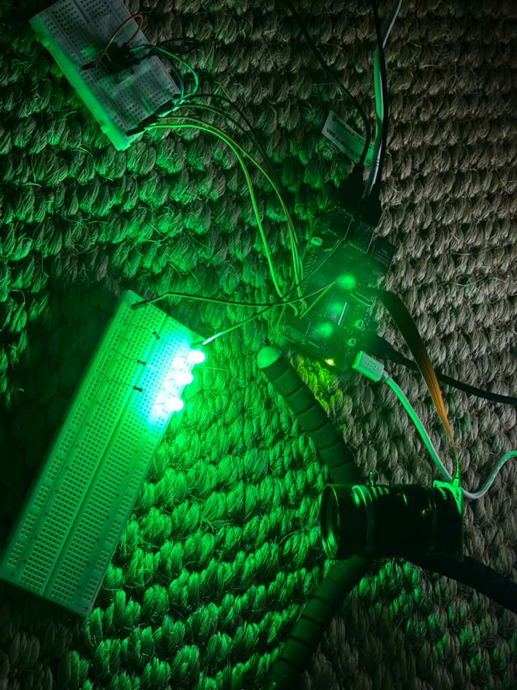

Phase 1 — Initial Setup
Completed- Breadboard wiring complete
- Power delivery verified
- Basic sensor communication working

Phase 2 — First Prototype
Partial Failure- Signal noise higher than expected
- Loose jumper wires caused intermittent failures
- Need PCB or soldered solution

Phase 3 — Iteration
In Progress- Evaluating PCB layout options
- Refactoring firmware
- Adding logging and error handling

Phase 4 — Validation
Planned- Stress testing
- Power consumption measurements

Phase 5 — Final Build
Planned- Final enclosure
- Documentation and release
